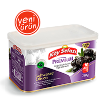
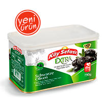
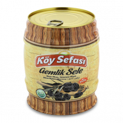
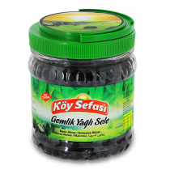
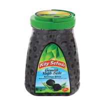
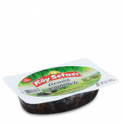
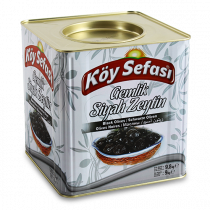
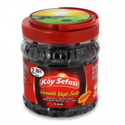

TR
|
EN
|
DE
Bayi Girişi
>>
şifremi Unuttum
Bayi Başvurusu Yapmak ıstiyorum
Menü
Anasayfa
Ürünler
Üretim
Kurumsal
İletişim
Ürün Grupları
YEŞİL ZEYTİN
Çizik Yeşil Zeytin
Biberli Yeşil Zeytin
Kırma Yeşil Zeytin
Kokteyl Yeşil Zeytin
Çekirdeksiz Yeşil Zeytin
SİYAH ZEYTİN
Salamura Zeytin
Yağlı Sele Grubu
SİYAH ZEYTİN | Yağlı Sele Grubu

750 Gr Teneke Gemlik Yağlı Salamura Siyah Zeytin Premium
750 Gr Teneke Gemlik Yağlı Salamura Siyah Zeytin Gold

750 Gr Teneke Gemlik Yağlı Salamura Siyah Zeytin Extra
Doğal Siyah Zeytin Ekonomik Sele
Doğal Siyah Zeytin Ekonomik Sele
Doğal Siyah Zeytin Yağlı Sele
Doğal Siyah Zeytin Yağlı Sele
700 Gr Doğal Siyah Zeytin Luxes
1500 Gr Pet Gemlik Yağlı Sele Siyah Zeytin
1500 Gr Fıçı Gemlik Yağlı Sele Siyah Zeytin

750 Gr Fıçı Gemlik Yağlı Sele Siyah Zeytin
200 Gr Vakumlu Gemlik Yağlı Sele Siyah Zeytin

700 Gr Pet Gemlik Yağlı Sele Siyah Zeytin

1000 Gr Pet Gemlik Yağlı Sele Siyah Zeytin

200 Gr Vakumlu Gemlik Soslu Yağlı Sele Siyah Zeytin

9 Kg Mega Yağlı Sele Siyah Zeytin
800 Gr Pet Gemlik Yağlı Gold Sele Siyah Zeytin

700 Gr Pet Gemlik Ekonomik Yağlı Sele Siyah Zeytin
Anasayfa
Ürünler
Üretim
Kurumsal
ıletişim
2015 ® Tüm hakları saklıdır.